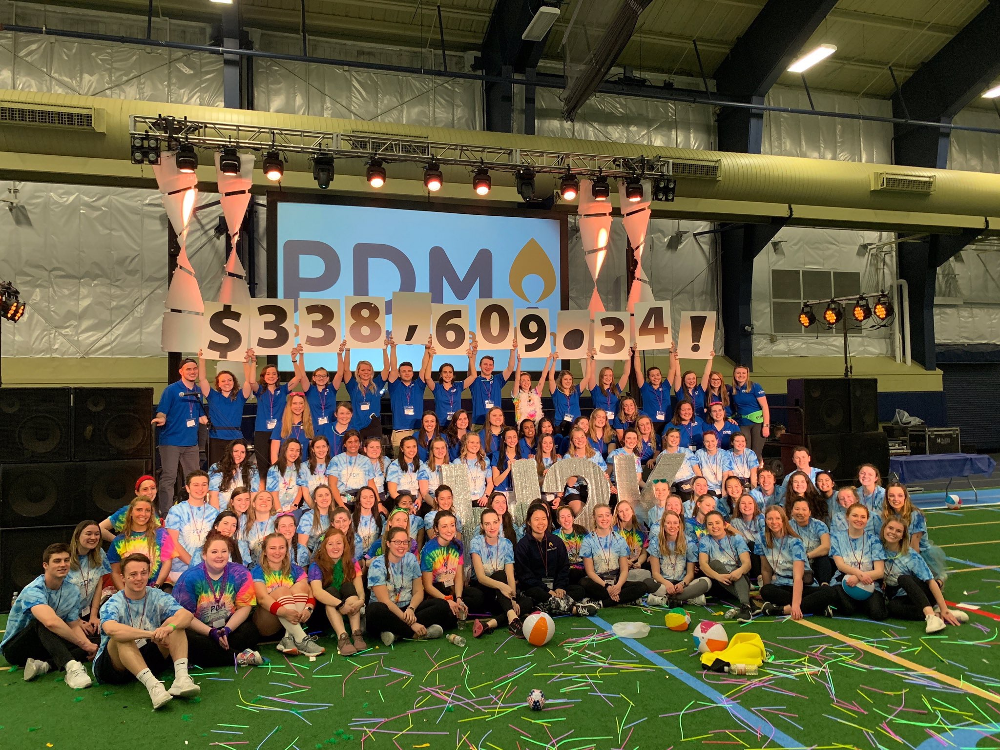

Pitt Dance Marathon strives to better the lives of children and their families at the Children's Hospital of Pittsburgh. We aim to give kids the chance to celebrate more birthdays through raising money for CHP with our 12-hour Children's Miracle Network Dance Marathon. This is the largest student- run philanthropy on Pitt's campus, and it is a yearlong fundraising effort. Last year, we proudly raised over $338,000, which is a $107,000 increase from the year before, and are only climbing from here! To find out more information on members, the cause, and how to donate, click the tabs above. As always, Hail to Pitt and Hail to Kids!
2019 total after the 12-hour marathon 
Some of our Miracle Kids